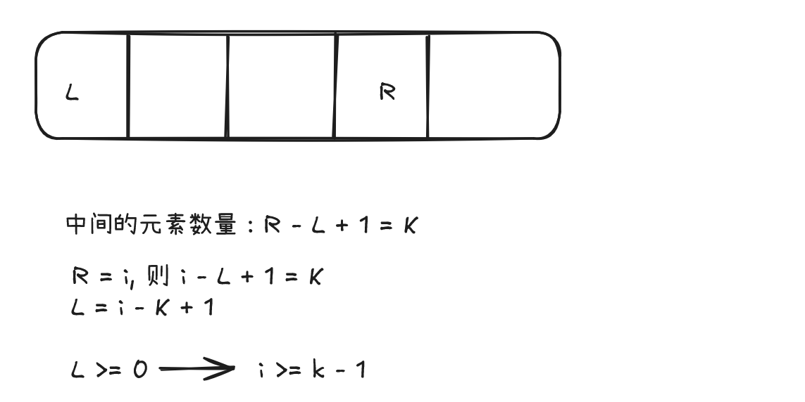

LeetCode 十题总结（一）滑动窗口
通过总结LeetCode题目，回顾所学知识、巩固编程基础，学习新技巧并提升问题解决能力。
本文为定长滑动窗口
核心思想
滑动窗口通过动态维护一个固定/可变大小的窗口区间，避免重复计算实现高效求解。定长滑动窗口特点：
- 窗口大小固定为
k - 通过「右移一位」更新窗口
- 时间复杂度优化至 O(n)
十题回顾
定长滑动窗口
- 1465. 定长子串中元音的最大数目
- 643. 子数组最大平均数 I
- 1343. 大小为 K 且平均值大于等于阈值的子数组数目
- 2090. 半径为 k 的子数组平均值
- 2379. 得到 K 个黑块的最少涂色次数
- 2841. 几乎唯一子数组的最大和
- 2461. 长度为 K 子数组中的最大和
- 1423. 可获得的最大点数
- 1052. 爱生气的书店老板
- 1652. 拆炸弹
方法模板
一个模板可解决大部分定长滑动窗口的题目
通用代码框架：
for i, in := range nums {
// 入，未形成第一个窗口时，重复第一步
if i < k-1 {
continue
}
sum+=in // 对于求和
// 更新答案
res = max(res, sum) // 对于最大值
// 出
out := i-k+1
sum-=nums[out]
}
for(int i = 0; i < nums.size(); i++) {
// 入，未形成第一个窗口时，重复第一步
if (i < k-1) {
continue;
}
sum+=nums[i]; // 对于求和
// 更新答案
res = max(res, sum); // 对于最大值
// 出
out = nums[i-k+1];
sum-=out;
}
其中K为滑动窗口长度
特例分析
- 对于1423，逆向思维，每次从两边取点数，可转化为总点数 - 中间滑动窗口的点数
- 对于643，结果存在负数，将初始值res设为0，通过简单的max比大小无法取得正确结果，此时可将res设为 math.MinInt(Go)、INT_MIN(c++) int类型的最小值
- 对于1052，题目可转化为：挽留住最多的原本因为生气而被赶走顾客数。
- 对于1652，使用取模遍历数组达到循环效果：
进阶技巧
- 哈希表辅助计数
当需要统计窗口内元素特征时（如唯一值、频次），结合map实时更新
h := make(map[int]int)
h[v]++
len(h) // 元素个数
unordered_map<int, int> h;
h[arr[i]]++;
h.size(); // 元素个数
要特别注意，当表内元素频次为 0 时，要删除此元素